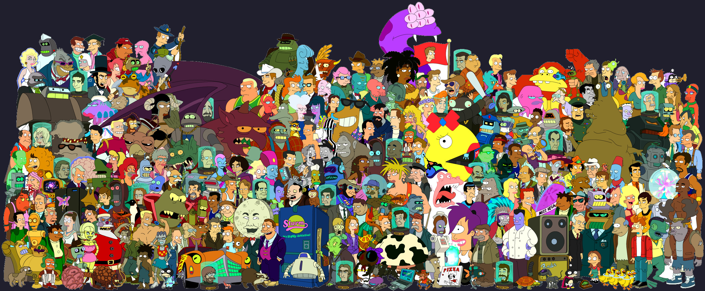

Bienvenido a Futurama Fan Site
Sumérgete en el mundo futurista y humorístico de Futurama, la serie animada creada por Matt Groening.

"Futurama" es una serie animada que sigue a Phillip Fry, un repartidor de pizza que se congela
criogénicamente en 1999 y despierta en el año 3000, encontrándose en un mundo futurista de
tecnología avanzada y seres peculiares.
Últimas Noticias de Futurama
{
"title": "Hulu renueva 'Futurama' por dos temporadas más tras el éxito del revival",
"src":
"https://www.20minutos.es/files/image_160_120/uploads/imagenes/2023/09/28/imagen-promocional-de-futurama.jpeg",
"alt": "Noticia 1",
"summary": "La serie, que en España podemos ver en Disney+, ha tenido una andadura de lo más
convulsa entre cancelaciones y resurrecciones, pero todo apunta a que por fin se ha
estabilizado.
¿Por qué Homer ya no estrangula a Bart en 'Los Simpson'? Hay una explicación y es esta",
"href":
"https://www.20minutos.es/cinemania/series/hulu-renueva-futurama-dos-temporadas-5187122/"
}
{
"title": "Los 11 mejores episodios de 'Futurama' que resumen todas sus temporadas en emisión",
"src": "https://www.20minutos.es/files/image_160_120/uploads/imagenes/2022/03/02/futurama.jpeg",
"alt": "Noticia 2",
"summary": "En 24 años, 'Futurama' ha dejado momentos memorables y se ha convertido en toda una
serie de culto. Recordamos los mejores episodios de cada una de las 11 temporadas.
¿Por qué ‘(Des)encanto’ no ha funcionado tan bien como ‘Los Simpson’ y ‘Futurama’?",
"href":
"https://www.20minutos.es/cinemania/series/futurama-mejores-episodios-temporadas-emision-5176408/"
}
{
"title": "Matt Groening, el 'padre' de 'Los Simpson' y 'Futurama': ¿qué serie nació primero?",
"src":
"https://www.20minutos.es/files/image_160_120/uploads/imagenes/2014/09/05/simpsonfuturama.jpg",
"alt": "Noticia 3",
"summary": "La serie ambientada en 2999 regresa después de una década de parón con el dibujante
de Portland de nuevo al cargo. El creador de ambas ficciones animadas ha amasado una gran
fortuna gracias a ellas.
Esta es la inevitable predicción de 'Los Simpson' sobre la tragedia del sumergible Titán",
"href":
"https://www.20minutos.es/cinemania/series/matt-groening-padre-los-simpson-futurama-quien-nacio-primero-5146616/"
}
{
"title": "'Futurama' ha vuelto (otra vez): así han sido las accidentadas idas y venidas de una
serie de culto",
"src":
"https://www.20minutos.es/files/image_160_120/uploads/imagenes/2023/07/24/fotograma-de-futurama.jpeg",
"alt": "Noticia 4",
"summary": "Ni 'Los Simpson' habrían sido capaces de predecir el recorrido televisivo de su
serie hermana.
Las 100 mejores series de comedia de todos los tiempos",
"href":
"https://www.20minutos.es/cinemania/series/futurama-nueva-temporada-idas-venidas-serie-culto-5159087/"
}
{
"title": "5 inventos vistos en la serie Futurama que se han hecho realidad",
"src": "https://www.20minutos.es/files/image_160_120/uploads/imagenes/2022/02/08/futurama.png",
"alt": "Noticia 5",
"summary": "Los Simpson no es la única serie de Matt Groening en la que se han hecho
premoniciones, Futurama también lo ha hecho con alguno de sus dispositivos futurísticos.",
"href": "https://www.20minutos.es/tecnologia/moviles-dispositivos/5-inventos-vistos-en-la-serie-futurama-que-se-han-hecho-realidad-4953638/"
}
{
"title": "'Futurama' regresará con nuevos capítulos en Hulu",
"src": "https://www.20minutos.es/files/image_160_120/uploads/imagenes/2022/02/10/los-protagonistas-de-futurama.jpeg",
"alt": "Noticia 6",
"summary": "Matt Groening y el productor David X. Cohen han impulsado este revival que llegará al VOD en 2023.
El orden de los episodios de 'Futurama' en Disney+ es un desastre pero te ayudamos a corregirlo
",
"href": "https://www.20minutos.es/cinemania/series/futurama-regresara-con-nuevos-capitulos-en-hulu-4954590/"
}